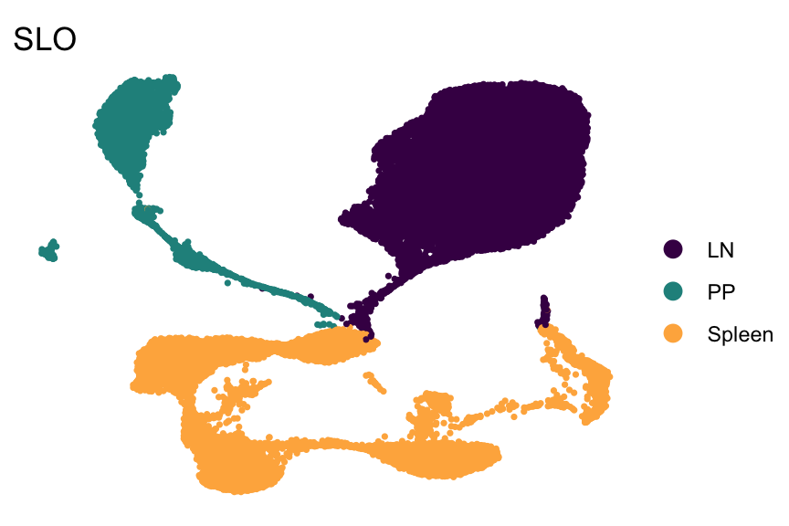
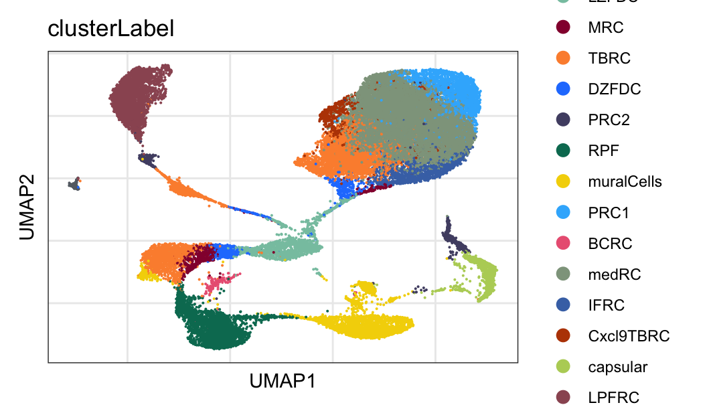

integrate data across organs
Mechthild Lütge
14 May 2020
Last updated: 2021-07-27
Checks: 6 1
Knit directory: CrossSLO_BRC_CXCL13/
This reproducible R Markdown analysis was created with workflowr (version 1.6.2). The Checks tab describes the reproducibility checks that were applied when the results were created. The Past versions tab lists the development history.
The R Markdown file has unstaged changes. To know which version of the R Markdown file created these results, you’ll want to first commit it to the Git repo. If you’re still working on the analysis, you can ignore this warning. When you’re finished, you can run wflow_publish to commit the R Markdown file and build the HTML.
Great job! The global environment was empty. Objects defined in the global environment can affect the analysis in your R Markdown file in unknown ways. For reproduciblity it’s best to always run the code in an empty environment.
The command set.seed(20210519) was run prior to running the code in the R Markdown file. Setting a seed ensures that any results that rely on randomness, e.g. subsampling or permutations, are reproducible.
Great job! Recording the operating system, R version, and package versions is critical for reproducibility.
Nice! There were no cached chunks for this analysis, so you can be confident that you successfully produced the results during this run.
Great job! Using relative paths to the files within your workflowr project makes it easier to run your code on other machines.
Great! You are using Git for version control. Tracking code development and connecting the code version to the results is critical for reproducibility.
The results in this page were generated with repository version 1f27cea. See the Past versions tab to see a history of the changes made to the R Markdown and HTML files.
Note that you need to be careful to ensure that all relevant files for the analysis have been committed to Git prior to generating the results (you can use wflow_publish or wflow_git_commit). workflowr only checks the R Markdown file, but you know if there are other scripts or data files that it depends on. Below is the status of the Git repository when the results were generated:
Ignored files:
Ignored: .Rhistory
Ignored: .Rproj.user/
Ignored: data/destiny/
Ignored: data/processedData/
Unstaged changes:
Modified: analysis/CharacterizePP_CXCL13seurat.Rmd
Modified: analysis/CharacterizeSpleen_CXCL13seurat.Rmd
Modified: analysis/IntegrateAcrossSLOs.Rmd
Modified: analysis/SLOspecific_signature.Rmd
Modified: analysis/visFolBRC_merged.Rmd
Note that any generated files, e.g. HTML, png, CSS, etc., are not included in this status report because it is ok for generated content to have uncommitted changes.
These are the previous versions of the repository in which changes were made to the R Markdown (analysis/IntegrateAcrossSLOs.Rmd) and HTML (docs/IntegrateAcrossSLOs.html) files. If you’ve configured a remote Git repository (see ?wflow_git_remote), click on the hyperlinks in the table below to view the files as they were in that past version.
| File | Version | Author | Date | Message |
|---|---|---|---|---|
| Rmd | 1f27cea | mluetge | 2021-07-02 | update colors and labels plus marker genes |
| html | 1f27cea | mluetge | 2021-07-02 | update colors and labels plus marker genes |
load packages
suppressPackageStartupMessages({
library(tidyverse)
library(Seurat)
library(magrittr)
library(dplyr)
library(purrr)
library(ggplot2)
library(here)
library(runSeurat3)
library(SingleCellExperiment)
library(RColorBrewer)
library(viridis)
library(ggsci)
library(scater)
library(scran)
library(pheatmap)
library(CellMixS)
library(muscat)
library(edgeR)
library(circlize)
})set dir and read input data
basedir <- here()
seuratLN <- readRDS(file=paste0(basedir, "/data/LN_seurat.rds"))
seuratPP <- readRDS(file=paste0(basedir, "/data/PP_seurat.rds"))
seuratSP <- readRDS(file=paste0(basedir, "/data/Spleen_wo_aFDC_seurat.rds"))
seurat <- merge(seuratLN, c(seuratPP, seuratSP))
seurat <- rerunSeurat3(seurat)Modularity Optimizer version 1.3.0 by Ludo Waltman and Nees Jan van Eck
Number of nodes: 34538
Number of edges: 1110500
Running Louvain algorithm...
Maximum modularity in 10 random starts: 0.9354
Number of communities: 12
Elapsed time: 11 seconds
Modularity Optimizer version 1.3.0 by Ludo Waltman and Nees Jan van Eck
Number of nodes: 34538
Number of edges: 1110500
Running Louvain algorithm...
Maximum modularity in 10 random starts: 0.8990
Number of communities: 21
Elapsed time: 8 seconds
Modularity Optimizer version 1.3.0 by Ludo Waltman and Nees Jan van Eck
Number of nodes: 34538
Number of edges: 1110500
Running Louvain algorithm...
Maximum modularity in 10 random starts: 0.8842
Number of communities: 25
Elapsed time: 9 seconds
Modularity Optimizer version 1.3.0 by Ludo Waltman and Nees Jan van Eck
Number of nodes: 34538
Number of edges: 1110500
Running Louvain algorithm...
Maximum modularity in 10 random starts: 0.9171
Number of communities: 18
Elapsed time: 10 secondsremove(seuratLN)
remove(seuratPP)
remove(seuratSP)
seurat$group <- seurat$clusterLabel
saveRDS(seurat, file = paste0(basedir,
"/data/allCells_merged_plus_processed_seurat.rds"))
## final color palette
colPal <- c("#87c5af", "#94033b", "#fc8f3b", "#2580fe", "#514e72", "#007961",
"#f4d403", "#38b5fc", "#eb6382", "#8fa38c", "#4673b4", "#b94403",
"#b7d165", "#9b5662", "#666b73")
names(colPal) <- c("LZFDC", "MRC", "TBRC","DZFDC","PRC2","RPF", "muralCells",
"PRC1", "BCRC", "medRC","IFRC", "Cxcl9TBRC", "capsular",
"LPFRC", "subepithelial")
colorSLO <- c(viridis(3)[c(1,2)], brewer.pal(n=9, name="YlOrRd")[c(4)])
colorCond <- brewer.pal(n=3, name="Paired")[c(1,2)]
colorSLOCond <- c("#440154FF","#807DBA", "#FEB24C", "#F16913", "#21908CFF")
colorBatch <- pal_igv()(n=length(unique(seurat$batch)))
names(colorSLO) <- c("LN", "PP", "Spleen")
names(colorCond) <- c("naive", "immunized")
names(colorBatch) <- unique(seurat$batch)
names(colorSLOCond) <- c("LN_immunized","LN_naive", "Spleen_naive",
"Spleen_immunized", "PP_immunized")visualize data
SLO
DimPlot(seurat, reduction = "umap", cols=colorSLO, group.by = "SLO")+
theme_bw() +
theme(axis.text = element_blank(), axis.ticks = element_blank(),
panel.grid.minor = element_blank()) +
xlab("UMAP1") +
ylab("UMAP2")
| Version | Author | Date |
|---|---|---|
| 1f27cea | mluetge | 2021-07-02 |
DimPlot(seurat, reduction = "umap", cols=colorSLO, group.by = "SLO",
shuffle=T,pt.size=0.6)+
theme_void()
| Version | Author | Date |
|---|---|---|
| 1f27cea | mluetge | 2021-07-02 |
labels
DimPlot(seurat, reduction = "umap", cols=colPal, group.by = "clusterLabel")+
theme_bw() +
theme(axis.text = element_blank(), axis.ticks = element_blank(),
panel.grid.minor = element_blank()) +
xlab("UMAP1") +
ylab("UMAP2")
| Version | Author | Date |
|---|---|---|
| 1f27cea | mluetge | 2021-07-02 |
DimPlot(seurat, reduction = "umap", cols=colPal, group.by = "clusterLabel",
shuffle=T,pt.size=0.6)+
theme_void()
| Version | Author | Date |
|---|---|---|
| 1f27cea | mluetge | 2021-07-02 |
SLO plus cond
DimPlot(seurat, reduction = "umap", cols=colorSLOCond,
group.by = "SLO_plus_cond")+
theme_bw() +
theme(axis.text = element_blank(), axis.ticks = element_blank(),
panel.grid.minor = element_blank()) +
xlab("UMAP1") +
ylab("UMAP2")
| Version | Author | Date |
|---|---|---|
| 1f27cea | mluetge | 2021-07-02 |
DimPlot(seurat, reduction = "umap", cols=colorSLOCond,
group.by = "SLO_plus_cond",
shuffle=T,pt.size=0.6)+
theme_void()
| Version | Author | Date |
|---|---|---|
| 1f27cea | mluetge | 2021-07-02 |
integrate data across SLOs
seurat$SLO_plus_clusterlabel <- paste0(seurat$SLO, "_", seurat$clusterLabel)
seurat$SLO_plus_group <- paste0(seurat$SLO, "_", seurat$group)
Idents(seurat) <- seurat$SLO_plus_group
#seuratSub <- subset(seurat, downsample = 300)
#seurat <- subset(seurat, clusterLabel == "aFDC", invert=T)
seurat.list <- SplitObject(object = seurat, split.by = "SLO")
for (i in 1:length(x = seurat.list)) {
seurat.list[[i]] <- NormalizeData(object = seurat.list[[i]],
verbose = FALSE)
seurat.list[[i]] <- FindVariableFeatures(object = seurat.list[[i]],
selection.method = "vst", nfeatures = 2000, verbose = FALSE)
}
seurat.anchors <- FindIntegrationAnchors(object.list = seurat.list, dims = 1:15,
k.filter = 50)
seurat.int <- IntegrateData(anchorset = seurat.anchors, dims = 1:15)
DefaultAssay(object = seurat.int) <- "integrated"
# rerun seurat
seurat.int <- ScaleData(object = seurat.int, verbose = FALSE,
features = rownames(seurat.int))
seurat.int <- RunPCA(object = seurat.int, npcs = 20, verbose = FALSE)
seurat.int <- RunTSNE(object = seurat.int, reduction = "pca", dims = 1:20)
seurat.int <- RunUMAP(object = seurat.int, reduction = "pca", dims = 1:20)
seurat.int <- FindNeighbors(object = seurat.int, reduction = "pca", dims = 1:20)
res <- c(0.6,0.8,0.4,0.25)
for(i in 1:length(res)){
seurat.int <- FindClusters(object = seurat.int, resolution = res[i],
random.seed = 1234)
}Modularity Optimizer version 1.3.0 by Ludo Waltman and Nees Jan van Eck
Number of nodes: 34538
Number of edges: 1075999
Running Louvain algorithm...
Maximum modularity in 10 random starts: 0.8768
Number of communities: 19
Elapsed time: 9 seconds
Modularity Optimizer version 1.3.0 by Ludo Waltman and Nees Jan van Eck
Number of nodes: 34538
Number of edges: 1075999
Running Louvain algorithm...
Maximum modularity in 10 random starts: 0.8599
Number of communities: 20
Elapsed time: 7 seconds
Modularity Optimizer version 1.3.0 by Ludo Waltman and Nees Jan van Eck
Number of nodes: 34538
Number of edges: 1075999
Running Louvain algorithm...
Maximum modularity in 10 random starts: 0.8963
Number of communities: 15
Elapsed time: 8 seconds
Modularity Optimizer version 1.3.0 by Ludo Waltman and Nees Jan van Eck
Number of nodes: 34538
Number of edges: 1075999
Running Louvain algorithm...
Maximum modularity in 10 random starts: 0.9163
Number of communities: 10
Elapsed time: 8 secondsDefaultAssay(object = seurat.int) <- "originalexp"
seurat.int$intCluster <- seurat.int$integrated_snn_res.0.6
Idents(seurat.int) <- seurat.int$intCluster
colCl <- c(rcartocolor::carto_pal(name="Safe"),pal_aaas()(8))
colClust <- colCl[c(1:length(unique(seurat.int$intCluster)))]
names(colClust) <- unique(seurat.int$intCluster)
## adjust cluster colors to match folBRCs
colClust[["1"]] <- "#e59c62" #TBRC
colClust[["5"]] <- "#d27125" #TBRC
colClust[["8"]] <- "#752333" #MRC/DZFDC
colClust[["10"]] <- "#5fb5a6" #LZFDC
colClust[["13"]] <- "#3b4671" #PRC2
colClust[["0"]] <- "#3b7156"
colClust[["3"]] <- "#a97426"
colClust[["11"]] <- "#c7826d"
colClust[["15"]] <- "#2670a9" visualize integrated data
SLO
DimPlot(seurat.int, reduction = "umap", cols=colorSLO, group.by = "SLO")+
theme_bw() +
theme(axis.text = element_blank(), axis.ticks = element_blank(),
panel.grid.minor = element_blank()) +
xlab("UMAP1") +
ylab("UMAP2")
| Version | Author | Date |
|---|---|---|
| 1f27cea | mluetge | 2021-07-02 |
DimPlot(seurat.int, reduction = "umap", cols=colorSLO, group.by = "SLO",
pt.size=0.4, shuffle = T)+
theme_void()
| Version | Author | Date |
|---|---|---|
| 1f27cea | mluetge | 2021-07-02 |
label
DimPlot(seurat.int, reduction = "umap", cols=colPal, group.by = "clusterLabel")+
theme_bw() +
theme(axis.text = element_blank(), axis.ticks = element_blank(),
panel.grid.minor = element_blank()) +
xlab("UMAP1") +
ylab("UMAP2")
| Version | Author | Date |
|---|---|---|
| 1f27cea | mluetge | 2021-07-02 |
DimPlot(seurat.int, reduction = "umap", cols=colPal, group.by = "clusterLabel",
pt.size=0.4, shuffle = T)+
theme_void()
| Version | Author | Date |
|---|---|---|
| 1f27cea | mluetge | 2021-07-02 |
cluster
DimPlot(seurat.int, reduction = "umap", cols=colClust)+
theme_bw() +
theme(axis.text = element_blank(), axis.ticks = element_blank(),
panel.grid.minor = element_blank()) +
xlab("UMAP1") +
ylab("UMAP2")
| Version | Author | Date |
|---|---|---|
| 1f27cea | mluetge | 2021-07-02 |
DimPlot(seurat.int, reduction = "umap", cols=colClust,
pt.size=0.4, shuffle = T)+
theme_void()
| Version | Author | Date |
|---|---|---|
| 1f27cea | mluetge | 2021-07-02 |
save integrated object
saveRDS(seurat.int,
file = paste0(basedir, "/data/allCells_merged_plus_processed",
"_integrated_seurat.rds"))chord diagram
seurat.int$organ_plus_label <- paste0(seurat.int$SLO, "_",
seurat.int$group)
datClustFreq <- data.frame(table(seurat.int$organ_plus_label)) %>%
mutate(tenPerc=Freq/100*30) %>% dplyr::select(Var1, tenPerc)
datClustint_Lab <- data.frame(table(seurat.int$organ_plus_label,
seurat.int$intCluster)) %>%
left_join(., datClustFreq, by="Var1") %>% filter(Freq>tenPerc) %>%
mutate(origDest=paste0(Var1, "_", Var2))
datClustint_Lablong <- data.frame(orig=seurat.int$organ_plus_label,
dest=seurat.int$intCluster) %>%
mutate(origDest=paste0(orig, "_", dest)) %>%
filter(origDest %in% datClustint_Lab$origDest)
###############################################################################
origin <- paste0("orig ", sample(c(1:10), 20, replace = T))
destination <- paste0("dest ", sample(c(1:10), 20, replace = T))
data <- data.frame(origin, destination)
## Transform input data in a adjacency matrix
adjacencyData <- with(datClustint_Lablong, table(orig, dest))
## create named vector with colors
colDat <- data.frame(col=colorSLO, SLO=names(colorSLO))
datClustint_Lab <- datClustint_Lab %>% mutate(SLO=gsub("_.*$", "", Var1)) %>%
left_join(., colDat, by="SLO")
grid.col <- datClustint_Lab$col
names(grid.col) <- datClustint_Lab$Var1
grid.col <- c(grid.col, colClust)
## determine selected dest (cluster)
selDest <- datClustint_Lab %>% group_by(Var2) %>% summarise(cnt=n_distinct(SLO))
selDestVec <- selDest$Var2[which(selDest$cnt>1)]
adjacencyDatafram <- data.frame(adjacencyData) %>%
mutate(selVal= ifelse(dest %in% selDestVec & Freq>0, T, F))
## plot only sel links
vis_mat = matrix(FALSE, nrow = nrow(adjacencyData), ncol = ncol(adjacencyData))
vis_mat[which(adjacencyDatafram$selVal)] = TRUE
rownames(vis_mat) = rownames(adjacencyData)
colnames(vis_mat) = colnames(adjacencyData)
chordDiagram(adjacencyData,
grid.col = grid.col,
annotationTrack = c("grid"),
annotationTrackHeight = mm_h(5),
link.visible = vis_mat,
transparency = 0.1)
| Version | Author | Date |
|---|---|---|
| 1f27cea | mluetge | 2021-07-02 |
## create short label names
rowShort <- data.frame(long=rownames(adjacencyData)) %>%
mutate(SLO=gsub("_.*", "", long)) %>% mutate(label=gsub(".*_", "", long)) %>%
mutate(LabShort=substr(label, start = 1, stop = 5)) %>%
mutate(short=paste0(SLO, "_", LabShort))
#rownames(adjacencyData) <- rowShort$short
## create color matrix with transparent links
adjacencyDatafram_col <- adjacencyDatafram %>% mutate(SLO=gsub("_.*", "", orig))
col_mat = matrix("#408B8A85", nrow = nrow(adjacencyData),
ncol = ncol(adjacencyData))
col_mat[which(adjacencyDatafram_col$SLO == "LN")] = "#44015440"
col_mat[which(adjacencyDatafram_col$SLO == "PP")] = "#21908C40"
col_mat[which(adjacencyDatafram_col$SLO == "Spleen")] = "#FEB24C40"
col_mat[which(adjacencyDatafram_col$SLO == "LN" &
adjacencyDatafram_col$selVal)] = "#440154FF"
col_mat[which(adjacencyDatafram_col$SLO == "PP" &
adjacencyDatafram_col$selVal)] = "#21908CFF"
col_mat[which(adjacencyDatafram_col$SLO == "Spleen" &
adjacencyDatafram_col$selVal)] = "#FEB24CFF"
rownames(col_mat) = rownames(adjacencyData)
colnames(col_mat) = colnames(adjacencyData)
chordDiagram(adjacencyData,
grid.col = grid.col,
annotationTrack = c("grid"),
annotationTrackHeight = mm_h(5),
col = col_mat)
| Version | Author | Date |
|---|---|---|
| 1f27cea | mluetge | 2021-07-02 |
chordDiagram(adjacencyData,
grid.col = grid.col,
annotationTrack = c("grid", "name"),
annotationTrackHeight = c(mm_h(5), mm_h(7)),
col = col_mat)
| Version | Author | Date |
|---|---|---|
| 1f27cea | mluetge | 2021-07-02 |
chordDiagram(adjacencyData,
grid.col = grid.col,
annotationTrack = NULL,
preAllocateTracks = list(track.height = 0.2),
col = col_mat)
circos.track(track.index = 1, panel.fun = function(x, y) {
circos.text(CELL_META$xcenter, CELL_META$ylim[1], CELL_META$sector.index,
facing = "clockwise", niceFacing = TRUE, adj = c(0, 0.5))
}, bg.border = NA)
| Version | Author | Date |
|---|---|---|
| 1f27cea | mluetge | 2021-07-02 |
subset data to selected clusters
## extract sel subsets based on coord diagram from integration
clustSel <- adjacencyDatafram %>% dplyr::filter(selVal==T)
seuratSub <- subset(seurat, SLO_plus_clusterlabel %in% clustSel$orig)
saveRDS(seuratSub, file=paste0(basedir, "/data/folBRC_allSLO_seurat.rds"))sankey diagram
# seurat.int$organ_plus_label <- paste0(seurat.int$SLO, "_",
# seurat.int$group)
# datClustFreq <- data.frame(table(seurat.int$organ_plus_label)) %>%
# mutate(tenPerc=Freq/100*25) %>% dplyr::select(Var1, tenPerc)
#
# datClustint_Lab <- data.frame(table(seurat.int$organ_plus_label,
# seurat.int$integrated_snn_res.0.6)) %>%
# left_join(., datClustFreq, by="Var1") %>% filter(Freq>tenPerc)
## sankey network
links <- data.frame(
source=datClustint_Lab$Var1,
target=datClustint_Lab$Var2,
value=datClustint_Lab$Freq
)
nodes <- data.frame(
name=c(sort(as.character(links$source)), as.character(links$target)) %>%
unique()
)
links <- links %>% arrange(., source)
links$IDsource <- match(links$source, nodes$name)-1
links$IDtarget <- match(links$target, nodes$name)-1
links$group <- "outGroup"
cat(paste(shQuote(grid.col, type="cmd"), collapse=", "))
cat(paste(shQuote(names(grid.col), type="cmd"), collapse=", "))
my_color <- 'd3.scaleOrdinal() .domain(["outGroup", "LN_medRC", "LN_TBRC", "PP_TBRC", "LN_medRC", "PP_LPFRC", "Spleen_redPulpFibroblast", "PP_TBRC", "Spleen_TBRC", "Spleen_muralCells", "LN_adventitial", "LN_DZFDC", "LN_MRC", "PP_DZFDC", "PP_MRC", "Spleen_DZFDC", "Spleen_MRC", "LN_IFRC", "LN_LZFDC", "PP_DZFDC", "PP_LZFDC", "Spleen_DZFDC", "Spleen_LZFDC", "Spleen_adventitial", "LN_DPTpos", "PP_adventitial", "Spleen_capsular", "LN_Cxcl9TBRC", "PP_subepithelial", "Spleen_BCRC", "2", "1", "0", "5", "9", "7", "15", "8", "11", "13", "10", "18", "3", "17", "4", "14", "6", "16", "12"]) .range(["#C0C0C0", "#440154FF", "#440154FF", "#21908CFF", "#440154FF", "#21908CFF", "#FEB24C", "#21908CFF", "#FEB24C", "#FEB24C", "#440154FF", "#440154FF", "#440154FF", "#21908CFF", "#21908CFF", "#FEB24C", "#FEB24C", "#440154FF", "#440154FF", "#21908CFF", "#21908CFF", "#FEB24C", "#FEB24C", "#FEB24C", "#440154FF", "#21908CFF", "#FEB24C", "#440154FF", "#21908CFF", "#FEB24C", "#88CCEE", "#CC6677", "#DDCC77", "#117733", "#332288", "#AA4499", "#44AA99", "#999933", "#882255", "#661100", "#6699CC", "#888888", "#3B4992FF", "#EE0000FF", "#008B45FF", "#631879FF", "#008280FF", "#BB0021FF", "#5F559BFF"])'
p <- networkD3::sankeyNetwork(Links = links, Nodes = nodes, Source = "IDsource",
Target = "IDtarget", Value = "value",
NodeID = "name",
sinksRight=T,
nodeWidth=40,
fontSize=10,
nodePadding=5,
iterations=0,
LinkGroup="group",
colourScale=grid.col)
p
## color all folBRC links
InGroup = c("LZFDC")
InGroup1 = c("DZFDC")
InGroup2 = c("MRC")
InGroup3 = c("TBRC")
links <- links %>% mutate(cluster= gsub("^.*_", "", source))
links$group[which(links$cluster %in% InGroup)] <- "inGroup"
links$group[which(links$cluster %in% InGroup1)] <- "inGroup1"
links$group[which(links$cluster %in% InGroup2)] <- "inGroup2"
links$group[which(links$cluster %in% InGroup3)] <- "inGroup3"
my_color <- 'd3.scaleOrdinal() .domain(["outGroup", "inGroup", "inGroup1", "inGroup2", "inGroup3", "LN_medRC", "LN_TBRC", "PP_TBRC", "LN_medRC", "PP_LPFRC", "Spleen_redPulpFibroblast", "PP_TBRC", "Spleen_TBRC", "Spleen_muralCells", "LN_adventitial", "LN_DZFDC", "LN_MRC", "PP_DZFDC", "PP_MRC", "Spleen_DZFDC", "Spleen_MRC", "LN_IFRC", "LN_LZFDC", "PP_DZFDC", "PP_LZFDC", "Spleen_DZFDC", "Spleen_LZFDC", "Spleen_adventitial", "LN_DPTpos", "PP_adventitial", "Spleen_capsular", "LN_Cxcl9TBRC", "PP_subepithelial", "Spleen_BCRC", "2", "1", "0", "5", "9", "7", "15", "8", "11", "13", "10", "18", "3", "17", "4", "14", "6", "16", "12"]) .range(["#C0C0C0", "#FF8000", "#CC6600","#941372" ,"#FF6666", "#440154FF", "#440154FF", "#21908CFF", "#440154FF", "#21908CFF", "#FEB24C", "#21908CFF", "#FEB24C", "#FEB24C", "#440154FF", "#440154FF", "#440154FF", "#21908CFF", "#21908CFF", "#FEB24C", "#FEB24C", "#440154FF", "#440154FF", "#21908CFF", "#21908CFF", "#FEB24C", "#FEB24C", "#FEB24C", "#440154FF", "#21908CFF", "#FEB24C", "#440154FF", "#21908CFF", "#FEB24C", "#88CCEE", "#CC6677", "#DDCC77", "#117733", "#332288", "#AA4499", "#44AA99", "#999933", "#882255", "#661100", "#6699CC", "#888888", "#3B4992FF", "#EE0000FF", "#008B45FF", "#631879FF", "#008280FF", "#BB0021FF", "#5F559BFF"])'
p <- networkD3::sankeyNetwork(Links = links, Nodes = nodes, Source = "IDsource",
Target = "IDtarget", Value = "value",
NodeID = "name",
sinksRight=F,
nodeWidth=40,
fontSize=0,
nodePadding=2,
iterations=0,
LinkGroup="group",
colourScale=my_color)
p
p <- networkD3::sankeyNetwork(Links = links, Nodes = nodes, Source = "IDsource",
Target = "IDtarget", Value = "value",
NodeID = "name",
sinksRight=F,
nodeWidth=40,
fontSize=10,
nodePadding=2,
iterations=0,
LinkGroup="group",
colourScale=my_color,
margin = list(left = 100))
p
library(htmlwidgets)
onRender(p, jsCode =
'function(el, x) {
d3.selectAll(".node text").attr("text-anchor", "begin").attr("x", -20);
}')
onRender(p, jsCode =
'function(el, x) {
d3.selectAll(".node text").attr("text-anchor", "begin").attr("x", 0);
}')Actual
networkD3::sankeyNetwork(Links = links, Nodes = nodes, Source = "IDsource",
Target = "IDtarget", Value = "value",
NodeID = "name",
sinksRight=F,
nodeWidth=40,
fontSize=10,
nodePadding=2,
iterations=0,
LinkGroup="group",
colourScale=my_color,
margin = list(left = 100))setTimeout(function () {
$('.nav-tabs a').on('shown.bs.tab', function() {
d3.selectAll(".node text").attr("text-anchor", "begin").attr("x", 20);
})
}, 10)session info
sessionInfo()R version 4.1.0 (2021-05-18)
Platform: x86_64-apple-darwin17.0 (64-bit)
Running under: macOS Catalina 10.15.7
Matrix products: default
BLAS: /Library/Frameworks/R.framework/Versions/4.1/Resources/lib/libRblas.dylib
LAPACK: /Library/Frameworks/R.framework/Versions/4.1/Resources/lib/libRlapack.dylib
locale:
[1] en_US.UTF-8/en_US.UTF-8/en_US.UTF-8/C/en_US.UTF-8/en_US.UTF-8
attached base packages:
[1] parallel stats4 stats graphics grDevices utils datasets methods base
other attached packages:
[1] circlize_0.4.13 edgeR_3.34.0 limma_3.48.1
[4] muscat_1.6.0 CellMixS_1.8.0 kSamples_1.2-9
[7] SuppDists_1.1-9.5 pheatmap_1.0.12 scran_1.20.1
[10] scater_1.20.1 scuttle_1.2.0 ggsci_2.9
[13] viridis_0.6.1 viridisLite_0.4.0 RColorBrewer_1.1-2
[16] SingleCellExperiment_1.14.1 SummarizedExperiment_1.22.0 Biobase_2.52.0
[19] GenomicRanges_1.44.0 GenomeInfoDb_1.28.1 IRanges_2.26.0
[22] S4Vectors_0.30.0 BiocGenerics_0.38.0 MatrixGenerics_1.4.0
[25] matrixStats_0.60.0 runSeurat3_0.1.0 here_1.0.1
[28] magrittr_2.0.1 SeuratObject_4.0.2 Seurat_4.0.3
[31] forcats_0.5.1 stringr_1.4.0 dplyr_1.0.7
[34] purrr_0.3.4 readr_2.0.0 tidyr_1.1.3
[37] tibble_3.1.3 ggplot2_3.3.5 tidyverse_1.3.1
loaded via a namespace (and not attached):
[1] estimability_1.3 scattermore_0.7 coda_0.19-4
[4] bit64_4.0.5 knitr_1.33 multcomp_1.4-17
[7] irlba_2.3.3 DelayedArray_0.18.0 data.table_1.14.0
[10] rpart_4.1-15 KEGGREST_1.32.0 RCurl_1.98-1.3
[13] doParallel_1.0.16 generics_0.1.0 ScaledMatrix_1.0.0
[16] TH.data_1.0-10 cowplot_1.1.1 RSQLite_2.2.7
[19] RANN_2.6.1 future_1.21.0 bit_4.0.4
[22] tzdb_0.1.2 spatstat.data_2.1-0 xml2_1.3.2
[25] lubridate_1.7.10 httpuv_1.6.1 assertthat_0.2.1
[28] xfun_0.24 hms_1.1.0 jquerylib_0.1.4
[31] evaluate_0.14 promises_1.2.0.1 progress_1.2.2
[34] fansi_0.5.0 caTools_1.18.2 dbplyr_2.1.1
[37] readxl_1.3.1 geneplotter_1.70.0 igraph_1.2.6
[40] DBI_1.1.1 htmlwidgets_1.5.3 spatstat.geom_2.2-2
[43] ellipsis_0.3.2 RSpectra_0.16-0 backports_1.2.1
[46] annotate_1.70.0 deldir_0.2-10 sparseMatrixStats_1.4.0
[49] vctrs_0.3.8 Cairo_1.5-12.2 ROCR_1.0-11
[52] abind_1.4-5 cachem_1.0.5 withr_2.4.2
[55] emmeans_1.6.2-1 sctransform_0.3.2 prettyunits_1.1.1
[58] goftest_1.2-2 cluster_2.1.2 lazyeval_0.2.2
[61] crayon_1.4.1 genefilter_1.74.0 labeling_0.4.2
[64] pkgconfig_2.0.3 nlme_3.1-152 vipor_0.4.5
[67] blme_1.0-5 rlang_0.4.11 globals_0.14.0
[70] lifecycle_1.0.0 miniUI_0.1.1.1 sandwich_3.0-1
[73] modelr_0.1.8 rsvd_1.0.5 cellranger_1.1.0
[76] rprojroot_2.0.2 polyclip_1.10-0 lmtest_0.9-38
[79] Matrix_1.3-4 boot_1.3-28 zoo_1.8-9
[82] reprex_2.0.0 beeswarm_0.4.0 whisker_0.4
[85] ggridges_0.5.3 GlobalOptions_0.1.2 png_0.1-7
[88] rjson_0.2.20 bitops_1.0-7 KernSmooth_2.23-20
[91] Biostrings_2.60.1 blob_1.2.2 DelayedMatrixStats_1.14.0
[94] workflowr_1.6.2 shape_1.4.6 parallelly_1.27.0
[97] beachmat_2.8.0 scales_1.1.1 memoise_2.0.0
[100] plyr_1.8.6 ica_1.0-2 gplots_3.1.1
[103] zlibbioc_1.38.0 compiler_4.1.0 dqrng_0.3.0
[106] lme4_1.1-27.1 clue_0.3-59 DESeq2_1.32.0
[109] fitdistrplus_1.1-5 cli_3.0.1 XVector_0.32.0
[112] lmerTest_3.1-3 listenv_0.8.0 TMB_1.7.20
[115] patchwork_1.1.1 pbapply_1.4-3 MASS_7.3-54
[118] mgcv_1.8-36 tidyselect_1.1.1 stringi_1.7.3
[121] highr_0.9 yaml_2.2.1 BiocSingular_1.8.1
[124] locfit_1.5-9.4 ggrepel_0.9.1 grid_4.1.0
[127] sass_0.4.0 tools_4.1.0 future.apply_1.7.0
[130] rstudioapi_0.13 bluster_1.2.1 foreach_1.5.1
[133] git2r_0.28.0 metapod_1.0.0 gridExtra_2.3
[136] farver_2.1.0 Rtsne_0.15 digest_0.6.27
[139] shiny_1.6.0 Rcpp_1.0.7 broom_0.7.8
[142] later_1.2.0 RcppAnnoy_0.0.18 httr_1.4.2
[145] AnnotationDbi_1.54.1 ComplexHeatmap_2.8.0 colorspace_2.0-2
[148] rvest_1.0.1 XML_3.99-0.6 fs_1.5.0
[151] tensor_1.5 reticulate_1.20 splines_4.1.0
[154] uwot_0.1.10 statmod_1.4.36 spatstat.utils_2.2-0
[157] plotly_4.9.4.1 xtable_1.8-4 nloptr_1.2.2.2
[160] jsonlite_1.7.2 rcartocolor_2.0.0 R6_2.5.0
[163] pillar_1.6.1 htmltools_0.5.1.1 mime_0.11
[166] minqa_1.2.4 glue_1.4.2 fastmap_1.1.0
[169] BiocParallel_1.26.1 BiocNeighbors_1.10.0 codetools_0.2-18
[172] mvtnorm_1.1-2 utf8_1.2.2 lattice_0.20-44
[175] bslib_0.2.5.1 spatstat.sparse_2.0-0 pbkrtest_0.5.1
[178] numDeriv_2016.8-1.1 ggbeeswarm_0.6.0 colorRamps_2.3
[181] leiden_0.3.8 gtools_3.9.2 glmmTMB_1.1.2
[184] survival_3.2-11 rmarkdown_2.9 munsell_0.5.0
[187] GetoptLong_1.0.5 GenomeInfoDbData_1.2.6 iterators_1.0.13
[190] variancePartition_1.22.0 haven_2.4.1 reshape2_1.4.4
[193] gtable_0.3.0 spatstat.core_2.3-0 date()[1] "Tue Jul 27 18:31:29 2021"
sessionInfo()R version 4.1.0 (2021-05-18)
Platform: x86_64-apple-darwin17.0 (64-bit)
Running under: macOS Catalina 10.15.7
Matrix products: default
BLAS: /Library/Frameworks/R.framework/Versions/4.1/Resources/lib/libRblas.dylib
LAPACK: /Library/Frameworks/R.framework/Versions/4.1/Resources/lib/libRlapack.dylib
locale:
[1] en_US.UTF-8/en_US.UTF-8/en_US.UTF-8/C/en_US.UTF-8/en_US.UTF-8
attached base packages:
[1] parallel stats4 stats graphics grDevices utils datasets methods base
other attached packages:
[1] circlize_0.4.13 edgeR_3.34.0 limma_3.48.1
[4] muscat_1.6.0 CellMixS_1.8.0 kSamples_1.2-9
[7] SuppDists_1.1-9.5 pheatmap_1.0.12 scran_1.20.1
[10] scater_1.20.1 scuttle_1.2.0 ggsci_2.9
[13] viridis_0.6.1 viridisLite_0.4.0 RColorBrewer_1.1-2
[16] SingleCellExperiment_1.14.1 SummarizedExperiment_1.22.0 Biobase_2.52.0
[19] GenomicRanges_1.44.0 GenomeInfoDb_1.28.1 IRanges_2.26.0
[22] S4Vectors_0.30.0 BiocGenerics_0.38.0 MatrixGenerics_1.4.0
[25] matrixStats_0.60.0 runSeurat3_0.1.0 here_1.0.1
[28] magrittr_2.0.1 SeuratObject_4.0.2 Seurat_4.0.3
[31] forcats_0.5.1 stringr_1.4.0 dplyr_1.0.7
[34] purrr_0.3.4 readr_2.0.0 tidyr_1.1.3
[37] tibble_3.1.3 ggplot2_3.3.5 tidyverse_1.3.1
loaded via a namespace (and not attached):
[1] estimability_1.3 scattermore_0.7 coda_0.19-4
[4] bit64_4.0.5 knitr_1.33 multcomp_1.4-17
[7] irlba_2.3.3 DelayedArray_0.18.0 data.table_1.14.0
[10] rpart_4.1-15 KEGGREST_1.32.0 RCurl_1.98-1.3
[13] doParallel_1.0.16 generics_0.1.0 ScaledMatrix_1.0.0
[16] TH.data_1.0-10 cowplot_1.1.1 RSQLite_2.2.7
[19] RANN_2.6.1 future_1.21.0 bit_4.0.4
[22] tzdb_0.1.2 spatstat.data_2.1-0 xml2_1.3.2
[25] lubridate_1.7.10 httpuv_1.6.1 assertthat_0.2.1
[28] xfun_0.24 hms_1.1.0 jquerylib_0.1.4
[31] evaluate_0.14 promises_1.2.0.1 progress_1.2.2
[34] fansi_0.5.0 caTools_1.18.2 dbplyr_2.1.1
[37] readxl_1.3.1 geneplotter_1.70.0 igraph_1.2.6
[40] DBI_1.1.1 htmlwidgets_1.5.3 spatstat.geom_2.2-2
[43] ellipsis_0.3.2 RSpectra_0.16-0 backports_1.2.1
[46] annotate_1.70.0 deldir_0.2-10 sparseMatrixStats_1.4.0
[49] vctrs_0.3.8 Cairo_1.5-12.2 ROCR_1.0-11
[52] abind_1.4-5 cachem_1.0.5 withr_2.4.2
[55] emmeans_1.6.2-1 sctransform_0.3.2 prettyunits_1.1.1
[58] goftest_1.2-2 cluster_2.1.2 lazyeval_0.2.2
[61] crayon_1.4.1 genefilter_1.74.0 labeling_0.4.2
[64] pkgconfig_2.0.3 nlme_3.1-152 vipor_0.4.5
[67] blme_1.0-5 rlang_0.4.11 globals_0.14.0
[70] lifecycle_1.0.0 miniUI_0.1.1.1 sandwich_3.0-1
[73] modelr_0.1.8 rsvd_1.0.5 cellranger_1.1.0
[76] rprojroot_2.0.2 polyclip_1.10-0 lmtest_0.9-38
[79] Matrix_1.3-4 boot_1.3-28 zoo_1.8-9
[82] reprex_2.0.0 beeswarm_0.4.0 whisker_0.4
[85] ggridges_0.5.3 GlobalOptions_0.1.2 png_0.1-7
[88] rjson_0.2.20 bitops_1.0-7 KernSmooth_2.23-20
[91] Biostrings_2.60.1 blob_1.2.2 DelayedMatrixStats_1.14.0
[94] workflowr_1.6.2 shape_1.4.6 parallelly_1.27.0
[97] beachmat_2.8.0 scales_1.1.1 memoise_2.0.0
[100] plyr_1.8.6 ica_1.0-2 gplots_3.1.1
[103] zlibbioc_1.38.0 compiler_4.1.0 dqrng_0.3.0
[106] lme4_1.1-27.1 clue_0.3-59 DESeq2_1.32.0
[109] fitdistrplus_1.1-5 cli_3.0.1 XVector_0.32.0
[112] lmerTest_3.1-3 listenv_0.8.0 TMB_1.7.20
[115] patchwork_1.1.1 pbapply_1.4-3 MASS_7.3-54
[118] mgcv_1.8-36 tidyselect_1.1.1 stringi_1.7.3
[121] highr_0.9 yaml_2.2.1 BiocSingular_1.8.1
[124] locfit_1.5-9.4 ggrepel_0.9.1 grid_4.1.0
[127] sass_0.4.0 tools_4.1.0 future.apply_1.7.0
[130] rstudioapi_0.13 bluster_1.2.1 foreach_1.5.1
[133] git2r_0.28.0 metapod_1.0.0 gridExtra_2.3
[136] farver_2.1.0 Rtsne_0.15 digest_0.6.27
[139] shiny_1.6.0 Rcpp_1.0.7 broom_0.7.8
[142] later_1.2.0 RcppAnnoy_0.0.18 httr_1.4.2
[145] AnnotationDbi_1.54.1 ComplexHeatmap_2.8.0 colorspace_2.0-2
[148] rvest_1.0.1 XML_3.99-0.6 fs_1.5.0
[151] tensor_1.5 reticulate_1.20 splines_4.1.0
[154] uwot_0.1.10 statmod_1.4.36 spatstat.utils_2.2-0
[157] plotly_4.9.4.1 xtable_1.8-4 nloptr_1.2.2.2
[160] jsonlite_1.7.2 rcartocolor_2.0.0 R6_2.5.0
[163] pillar_1.6.1 htmltools_0.5.1.1 mime_0.11
[166] minqa_1.2.4 glue_1.4.2 fastmap_1.1.0
[169] BiocParallel_1.26.1 BiocNeighbors_1.10.0 codetools_0.2-18
[172] mvtnorm_1.1-2 utf8_1.2.2 lattice_0.20-44
[175] bslib_0.2.5.1 spatstat.sparse_2.0-0 pbkrtest_0.5.1
[178] numDeriv_2016.8-1.1 ggbeeswarm_0.6.0 colorRamps_2.3
[181] leiden_0.3.8 gtools_3.9.2 glmmTMB_1.1.2
[184] survival_3.2-11 rmarkdown_2.9 munsell_0.5.0
[187] GetoptLong_1.0.5 GenomeInfoDbData_1.2.6 iterators_1.0.13
[190] variancePartition_1.22.0 haven_2.4.1 reshape2_1.4.4
[193] gtable_0.3.0 spatstat.core_2.3-0